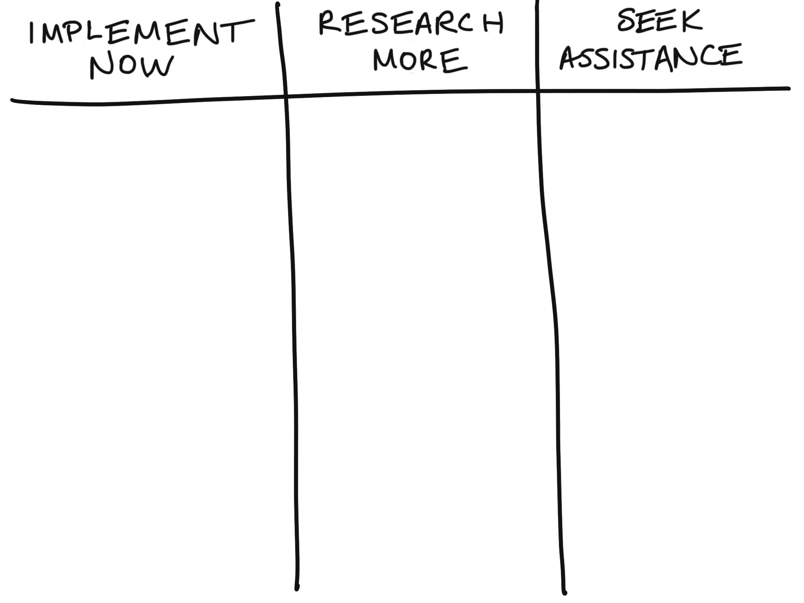
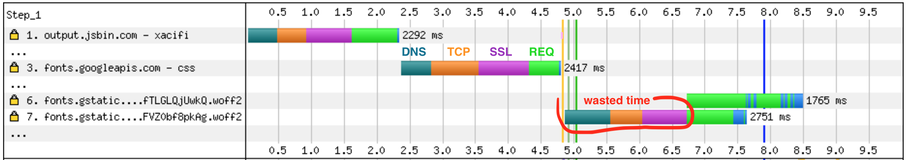
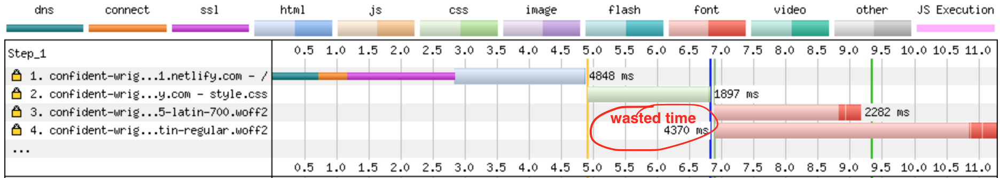
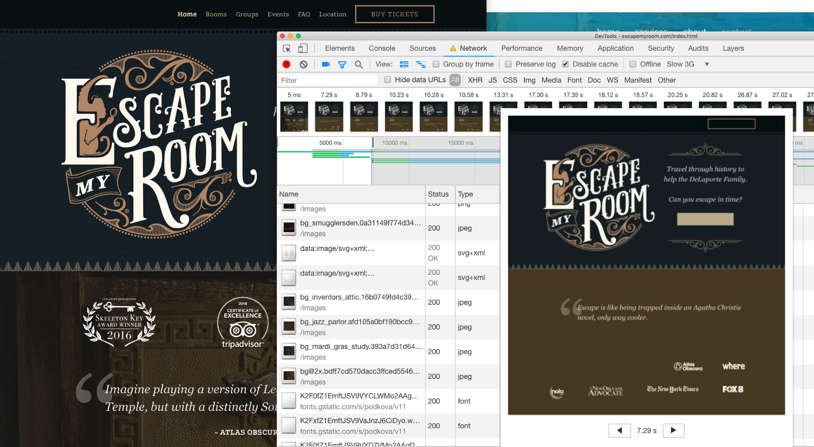

<!doctype html>
<html lang="en">
    <head>
        <meta charset="utf-8">
        <meta name="viewport" content="width=device-width, initial-scale=1.0, maximum-scale=1.0, user-scalable=no">

        <title>reveal-md</title>
        <link rel="stylesheet" href="./css/reveal.css">
        <link rel="stylesheet" href="./_assets/style.css" id="theme">
        <link rel="stylesheet" href="./css/highlight/github.css">
        <link rel="stylesheet" href="./css/print/paper.css" type="text/css" media="print">


    </head>
    <body>

        <div class="reveal">
            <div class="slides"><section ><section data-markdown><script type="text/template">

<!-- .slide: data-background="./images/hero_bg.jpg" -->
<h1 class="title dark-background"><span class="translucent">Get in the Fast Lane:</span> Measuring Web Performance</h1>
<h2 class="subtitle">Sia Karamalegos</h2>

</script></section><section data-markdown><script type="text/template">

## hi, i'm sia

⚡ 👩🏻‍💻 🇬🇷 🐶 🐺 🎨 📓 ✈️


</script></section><section data-markdown><script type="text/template">

## Links for today

- Slides: [bit.ly/perf-work](http://bit.ly/perf-work)
- Project: [bit.ly/markdown-viewer](http://bit.ly/markdown-viewer) (pull down all branches)

</script></section><section data-markdown><script type="text/template">

## Coding is more fun with friends 🧑🏽‍🤝‍🧑🏻

- 👋 Introduce yourself to your neighbors
- 🍐Pair programming is a great option!
- 💬 Ask lots of questions

<aside class="notes"><p>Suggest pair programming and give them an opportunity to change seats.</p>
</aside></script></section><section data-markdown><script type="text/template">

## Take out a piece of paper...


</script></section></section><section  data-markdown><script type="text/template">
# Topics

<table id="contents-table" style="font-size:0.9em;">
  <tbody>
    <tr>
      <td>[🤷🏼 Intro: Why?](#/2)</td>
      <td>[🏊🏿‍♀️ Deep-Dive: JavaScript+ in Webpack](#/9)</td>
    </tr>
    <tr>
      <td>[🧪 Test environments](#/3)</td>
      <td>[💸 Smooth UI: Script execution costs](#/10)</td>
    </tr>
    <tr>
      <td>[📈 Metrics](#/4)</td>
      <td>[🍹 Real User Monitoring](#/11)</td>
    </tr>
    <tr>
      <td>
        
        [Set up DevTools #LikeABoss](#/5)
      </td>
      <td>[ 🎷 Smooth UI: Other costs](#/12)</td>
    </tr>
    <tr>
      <td>[⌚ Download cost: Latency](#/6)</td>
      <td>[🦸🏻‍♀️ Accessibility debugging](#/13)</td>
    </tr>
    <tr>
      <td>[📸 Download cost: Images](#/7)</td>
      <td>[✏️ Exit Ticket](#/14)</td>
    </tr>
    <tr>
      <td>[💰 Download cost: JavaScript](#/8)</td>
      <td>[🤔 Closing: Perceived performance](#/15)</td>
    </tr>
  </tbody>
</table>
</script></section><section ><section data-markdown><script type="text/template">
<!-- .slide: data-background="./images/elevator2.jpg" -->
<h1 class="dark-background">
  <span class="highlighter">Why do elevators have mirrors?</span>
</h1>

<aside class="notes"><p>Intro</p>
</aside></script></section><section data-markdown><script type="text/template">

# Why Should I Care?

</script></section><section data-markdown><script type="text/template">

> Pinterest reduced load times by 40% and saw a 15% increase in sign ups.

<small>https://wpostats.com/</small>

</script></section><section data-markdown><script type="text/template">

> Starbucks implemented a 2x faster time to interactive resulting in a 65% increase in rewards registrations.

<small>[Chrome Dev Summit 2018](https://www.youtube.com/watch?v=Xryhxi45Q5M&t=1113s&index=6&list=PLNYkxOF6rcIDjlCx1PcphPpmf43aKOAdF )</small>

</script></section><section data-markdown><script type="text/template">

> AliExpress reduced load by 36% and saw a 10.5% increase in orders.

<small>https://wpostats.com/</small>

</script></section><section data-markdown><script type="text/template">

> Speed is now used as a ranking factor for mobile searches.

<small>https://developers.google.com/web/updates/2018/07/search-ads-speed</small>

<aside class="notes"><p>In 2016, Doubleclick by Google released a report saying that 53% of mobile sites are abandoned if pages take longer than 3 seconds to load.</p>
</aside></script></section></section><section ><section data-markdown><script type="text/template">
# 🧪 Test Environments 🧪

</script></section><section data-markdown><script type="text/template">

## Exercise Time!

<video autoplay loop>
  <source src="./images/arnold_cats.mp4" type="video/mp4">
  Sorry, your browser doesn't support embedded videos.
</video>

</script></section><section data-markdown><script type="text/template">

## Exercise: Flying Blind ✈️

Pick a website you work on. Run it through each of these tools, keeping each open in separate tabs:

1. **Lighthouse** (DevTools audit tab, only check performance)
2. **PageSpeed Insights** [developers.google.com/speed/pagespeed/insights/](https://developers.google.com/speed/pagespeed/insights/)
3. **WebPageTest** [webpagetest.org/easy](http://webpagetest.org/easy)
4. **Test My Site** [testmysite.thinkwithgoogle.com](https://testmysite.thinkwithgoogle.com)
5. **RespImageLint** [ausi.github.io/respimagelint/](https://ausi.github.io/respimagelint/) (requires some set up)

<aside class="notes"><p><strong>Discussion</strong>: What do you notice about each? What are the similarities/differences? What do you like/dislike?</p>
</aside></script></section><section data-markdown><script type="text/template">

## Testing Environments

<br>

<table class="fixed-two-column" id="invisible-gridlines">
  <thead>
    <tr>
      <th>Lab/Synthetic</th>
      <th>Field/Real User Monitoring (RUM)</th>
    </tr>
  </thead>
  <tbody>
    <tr>
      <td>
        <ul class="plus-minus" style="display:inline;">
          <li class="plus">Controlled environment</li>
          <li class="plus">Predefined network and device settings</li>
          <li class="plus">Reproducible for better performance debugging</li>
          <li class="minus">May not capture real-world bottlenecks</li>
        </ul>
      </td>
      <td>
        <ul class="plus-minus" style="display:inline;">
          <li class="plus">Performance data from **real user page loads** and interactions</li>
          <li class="minus">Limited data and performance debugging capability</li>
      </td>
    </tr>
  </tbody>
</table>


</script></section><section data-markdown><script type="text/template">

## Lab/Synthetic Environment Tools

_Emulated CPU and network throttling_

<div id="dev-tool">
  
  <div>Chrome DevTools</div>
</div>
<div id="dev-tool">
  
  <div>Lighthouse</div>
</div>
<div id="dev-tool">
  
  <div>PageSpeed Insights</div>
</div>

<aside class="notes"><p>DevTools for Network tab (load) and Performance tab (script execution costs)</p>
</aside></script></section><section data-markdown><script type="text/template">

> Your laptop is a filthy liar.

<small>Alex Russell, [Progressive Performance talk at Chrome Dev Summit 2016](https://www.youtube.com/watch?v=4bZvq3nodf4)</small>

<aside class="notes"><p>network and CPU throttling are not representative of real user experiences. mobile CPUs process in a completely different way, and heat management is especially different.</p>
</aside></script></section><section data-markdown><script type="text/template">

## Optimize for the device and network your users have

- 2-5x difference in fastest vs slowest phones
- 75% of worldwide mobile connections on 2G or 3G
- Not just developing countries but rural areas or spotty networks like conference wifi
- Use Google Analytics data to profile your users and configure [webpagetest.org](https://www.webpagetest.org/) to reflect them more closely

<small>https://infrequently.org/2017/10/can-you-afford-it-real-world-web-performance-budgets/</small>

<aside class="notes"><p>Performance budgets at Google are $200 Android phone on a slow 3G network to target 5s initial load and 2s for subsequent. Converts to 130-170kb gzipped.</p>
</aside></script></section><section data-markdown><script type="text/template">

## Lab/Synthetic Environment Tools

_Real devices and networks_

<div id="dev-tool">
  
  <div>WebPageTest<br>&nbsp;</div>
</div>

<div id="dev-tool">
  
  <div>DevTools +<br>connected device 📱</div>
</div>

<aside class="notes"><p>Buy a shitty phone and connect it to your computer for on-device debugging. webpagetest.org/easy has a basic set up - $200 phone, slow 3G?</p>
</aside></script></section><section data-markdown><script type="text/template">

## WebPageTest


<small>https://twitter.com/HenriHelvetica/status/1109557588411203584</small>

</script></section><section data-markdown><script type="text/template">

## Field/RUM Testing Tools

_Publicly available data_

<div id="dev-tool">
  
  <div>CrUX</div>
</div>

<div id="dev-tool">
  
  <div>PageSpeed Insights</div>
</div>

<div id="dev-tool">
  
  <div>Google BigQuery</div>
</div>

<small>Chrome User Experience (CrUX) data is available in PageSpeed Insights or BigQuery.</small>

</script></section><section data-markdown><script type="text/template">

## Field/RUM Testing Tools

_Self-run data sent to your backend or analytics tool_

- Navigation Timing API
- Resource Timing API
- User Timing API for custom timings

<small>
  https://developers.google.com/web/fundamentals/performance/navigation-and-resource-timing/
  <br />https://www.keycdn.com/blog/user-timing/
<small>

</script></section><section data-markdown><script type="text/template">

# More tools in the toolbox

</script></section><section data-markdown><script type="text/template">

## Test My Site


- Snazzy-looking and gives pretty pdf
- High-level data from WebPageTest and PageSpeed Insights
- Good for the speed scorecard and impact calculator

</script></section><section data-markdown><script type="text/template">

## RespImageLint

[RespImageLint](https://github.com/ausi/respimagelint) is a bookmarklet linter for responsive images.


<aside class="notes"><p>Lighthouse audits also does this better now, but I still like this quick tool and the prescriptive suggestions.</p>
</aside></script></section><section data-markdown><script type="text/template">

## Bundle Analyzers

- Several webpack tools exist - check out options on [SurviveJS](https://survivejs.com/webpack/optimizing/build-analysis/)
- One of my favorites: `webpack-bundle-analyzer`


</script></section></section><section ><section data-markdown><script type="text/template">
# 📈 Metrics 📈

</script></section><section data-markdown><script type="text/template">

## ~~Load time~~ Speed Index

How quickly the page contents are visually populated

- Expressed in milliseconds
- Dependent on size of the view port
- Measured in Lighthouse and WebPageTest

> <aside class="notes"><p>It is particularly useful for comparing experiences of pages against each other (before/after optimizing, my site vs competitor, etc) and should be used in combination with the other metrics (load time, start render, etc) to better understand a site&#39;s performance. Historically we have relied on milestone timings to determine how fast or slow web pages were.  The most common of these is the time until the browser reaches the load event for the main document (onload).  The load event is easy to measure both in a lab environment and in the real world.  Unfortunately, it isn&#39;t a very good indicator of the actual end-user experience.  As pages grow and load a lot of content that is not visible to the user or off the screen (below the fold) the time to reach the load event is extended even if the user-visible content has long-since rendered. Lighthouse may use a node module called Speedline for this.</p>
<p><small><a href="https://sites.google.com/a/webpagetest.org/docs/using-webpagetest/metrics/speed-index">https://sites.google.com/a/webpagetest.org/docs/using-webpagetest/metrics/speed-index</a></small></p>
</aside></script></section><section data-markdown><script type="text/template">

## Time to Interactive

How long it takes a page to become fully interactive

<iframe width="560" height="315" src="https://www.youtube.com/embed/Lx1cYJAVnzA" frameborder="0" allow="autoplay; encrypted-media" allowfullscreen></iframe>

<small>End to End Apps with Polymer by Kevin Schaaf, Polymer Summit 2017</small>

<aside class="notes"><p>the point at which layout has stabilized, key webfonts are visible, and the main thread is available enough to handle user input within 50ms.</p>
</aside></script></section><section data-markdown><script type="text/template">

## Frame Rate


<aside class="notes"><p>Frame rate or frames per second (fps), is one measure of responsiveness. Modern devices refresh their screens at a rate of 60 fps. Converting that to an individual frame, we theoretically have 16 ms to render. In actuality, the browser needs some of that time, so we should target 10ms per frame. Any more, and the human eye will be able to detect the jank or jitter.</p>
</aside></script></section><section data-markdown><script type="text/template">

## RAIL model for performance goals

- **Response**: process events in under 50ms
- **Animation**: produce a frame in 10ms (for 60fps devices)
- **Idle**: maximize idle time (to respond in 50ms or less)
- **Load**: deliver content and become interactive in under 5 seconds, 2 seconds for subsequent loads*

<small>[Measure Performance with the RAIL Model](https://developers.google.com/web/fundamentals/performance/rail)</small>

<aside class="notes"><p>R:Complete a transition initiated by user input within 100ms. A: Have 16ms, but browsers need about 6ms to render each frame. I: Maximize idle time to increase the odds that the page responds to user input within 50ms. L:on mid-range mobile devices with slow 3G connections</p>
</aside></script></section><section data-markdown><script type="text/template">

## Exercise: Speed Index + TTI

Look at the tools you ran earlier, and write down:

1. The site's speed index
2. The site's time-to-interactive
3. Under what conditions were these run (device, network, emulated/real?
4. Bonus: where might you be able to test performance while using the app (not loading)?
</script></section></section><section ><section data-markdown><script type="text/template">
# Set up DevTools #LikeABoss


</script></section><section data-markdown><script type="text/template">

## Exercise: Set up DevTools #LikeABoss


<aside class="notes"><p>Go through handout. Drag tabs to reorder.</p>
</aside></script></section><section data-markdown><script type="text/template">

## DevTools High-Level Orientation

- **Performance**: script and other execution costs (flame chart)
- **Network**: download time (waterfall)
- **Audits**: scores performance, PWAs, accessibility, etc (Lighthouse)

<aside class="notes"><p>Lots of other cool tools exist like local overrides, paint layers, etc.</p>
</aside></script></section><section data-markdown><script type="text/template">

## Exercise: Why is our site so slow?

- Go to the deployed version of our app at [bit.ly/turtle-mv](http://bit.ly/turtle-mv).
- Use DevTools or other tools to write down a list of things we might want to improve.

<aside class="notes"><p>In the next units, we&#39;ll learn about the biggest issues that cause slow websites and fix them. Then this process won&#39;t feel as foreign next time you do it.</p>
</aside></script></section></section><section ><section data-markdown><script type="text/template">
# ⌚ Latency ⌚

<aside class="notes"><p>Who is brave enough to admit they don&#39;t really know what that means?</p>
</aside></script></section><section data-markdown><script type="text/template">

<section>
  <h2>latency</h2>
  <p>/ˈlātənsē/</p>
  <ol>
	  <li class="fragment fade-in-then-semi-out">the state of existing but not yet being developed or manifest; concealment.
      <br /><small><em>"tension, and the latency of violence, make the greatest impressions"</em></small></li>
	  <li class="fragment fade-in-then-semi-out">the delay before a transfer of data begins following an instruction for its transfer.
      <br /><small><em>"poor performance due to network latency"</em></small></li>
  </ul>
</section>

</script></section><section data-markdown><script type="text/template">

## Latency Exercise #1

1. Perform a Network profile on one of these websites: [nolalibrary.org/](http://nolalibrary.org/), [grandrapidsohio.com/](http://www.grandrapidsohio.com/)
2. Now, perform a Network profile on one of these websites: [marvel.com/captainmarvel/](https://www.marvel.com/captainmarvel/), [clioandcalliope.com](https://www.clioandcalliope.com/), [nola.gov/](https://www.nola.gov/)
3. Compare the two, focusing on assets from the same domain (ignore ads and third-party scripts). How do the shapes of the waterfalls compare? Are they chained or concurrent?

</script></section><section data-markdown><script type="text/template">

## HTTP/1.1


<small>https://deliciousbrains.com/performance-best-practices-http2/</small>

<aside class="notes"><p>Starts downloading assets as TCP connections become available</p>
</aside></script></section><section data-markdown><script type="text/template">

## HTTP/2


<small>https://deliciousbrains.com/performance-best-practices-http2/</small>

<aside class="notes"><p>In addition, header compression. HTTP2 server push has not lived up to the promise, but it&#39;s still a new area. For the most part, need to use https.</p>
</aside></script></section><section data-markdown><script type="text/template">


<small>https://twitter.com/jaffathecake/status/1044121129848377344</small>

</script></section><section data-markdown><script type="text/template">

# Fonts


</script></section><section data-markdown><script type="text/template">

## Webfonts

<ul class="plus-minus">
  <li class="plus">Hosted on fast and reliable CDNs</li>
  <li class="plus">Can provide optimized variants based on user's browser</li>
   <li class="plus">Opportunity for shared caching on popular fonts</li>
  <li class="plus">We now have control over FOUT and FOIT!</li>
  <li class="minus">Minumum of 2 separate requests</li>
  <li class="minus">Can't use resource hints on the font file</li>
  <li class="minus">Doesn't take advantage of HTTP2 multiplexing</li>
</ul>

</script></section><section data-markdown><script type="text/template">

## Exercise Time!

<video autoplay loop playsinline muted>
  <source src="./images/hamster.mp4" type="video/mp4">
  Sorry, your browser doesn't support embedded videos.
</video>

</script></section><section data-markdown><script type="text/template">

## Latency Exercise #2

1. Run a network profile on [bit.ly/webfont-css](http://bit.ly/webfont-css).
<!-- TODO: Add a wbt profile -->
<!-- Go to this webpagetest profile: [tinyurl.com/y5bl5ksn](https://tinyurl.com/y5bl5ksn). Click on the waterfall for Run 2 (the median run). -->
2. Focus on the all the CSS and font-related lines.
3. Write down the steps that are happening. The code is at [bit.ly/webfont-css-code](http://bit.ly/webfont-css-code). What do you notice?

<aside class="notes"><p>Need to answer question for both Google and local font. Google font is waiting to DL CSS until after current CSS, and local font is waiting until after current CSS though we know we want it.</p>
</aside></script></section><section data-markdown><script type="text/template">

## Loading Google Fonts from CSS

```css
@import url('https://fonts.googleapis.com/css?family=Open+Sans:400,700');
```


<aside class="notes"><p>pause here and ask what else seems wasteful - the connection time to fonts.gstatic.com</p>
</aside></script></section><section data-markdown><script type="text/template">

## Loading Google Fonts from HTML

```html
<link href="https://fonts.googleapis.com/css?family=Muli:400"
      rel="stylesheet">
```
<!-- TODO: animate the image to show circle on click and slow bc no preconnect -->


</script></section><section data-markdown><script type="text/template">


<small>https://twitter.com/addyosmani/status/743571393174872064?lang=en</small>

<aside class="notes"><p>dns-prefetch only does the dns part of the prefetch, but on the plus side, it doesn&#39;t expire after a short amount of time.</p>
</aside></script></section><section data-markdown><script type="text/template">

## Loading Google Fonts with preconnect to fonts.gstatic.com

```html
<link rel="preconnect" href="https://fonts.gstatic.com/" crossorigin>
<link href="https://fonts.googleapis.com/css?family=Muli:400"
      rel="stylesheet">
```


</script></section><section data-markdown><script type="text/template">

## Self-Hosted Fonts

```html
<link as="font" type="font/woff2"
  href="./fonts/muli-v12-latin-regular.woff2" crossorigin>

<link as="font" type="font/woff2"
  href="./fonts/muli-v12-latin-700.woff2" crossorigin>
```



</script></section><section data-markdown><script type="text/template">

## Preloading self-hosted fonts

```html
<link rel="preload" as="font" type="font/woff2"
  href="./fonts/muli-v12-latin-regular.woff2" crossorigin>

<link rel="preload" as="font" type="font/woff2"
  href="./fonts/muli-v12-latin-700.woff2" crossorigin>
```


<small>Note that `preload` loads a resource whether used or not. Only preload resources that are needed on a particular page. Don't self-host popular webfonts like Open Sans or Roboto (sabotages caching).</small>

<aside class="notes"><p><code>rel=&quot;preload&quot;</code> tells the browser to declaratively fetch the resource but not “execute” it (our CSS will queue usage). <code>as=&quot;font&quot;</code> tells the browser what it will be downloading so that it can set an appropriate priority. Without it, the browser would set a default low priority. <code>type=&quot;font/woff2</code> tells the browser the file type so that it only downloads the resource if it supports that file type. <code>crossorigin</code> is required because fonts are fetched using anonymous mode CORS.</p>
</aside></script></section><section data-markdown><script type="text/template">

## FOIT



<aside class="notes"><p>FOIT in action — note the missing navbar text in the filmstrip screenshot (throttled to slow 3G)</p>
</aside></script></section><section data-markdown><script type="text/template">

## `font-display`


<small>https://font-display.glitch.me/</small>

<aside class="notes"><p>add the <code>font-display</code> property to the <code>@font-face</code> declaration</p>
</aside></script></section><section data-markdown><script type="text/template">

## Exercise: Font Latency &amp; Display Optimization

Let's make our markdown viewer faster!
<br>[bit.ly/markdown-viewer](http://bit.ly/markdown-viewer)

1. Move the Google font load to HTML from CSS.
2. Preconnect to fonts.gstatic.com.
3. Preload the local fonts.
4. Fix the FOIT for both web and local fonts.
5. Bonus: Use cmd + shift + p to turn on "Show coverage". Record a load and click on the results. What do you notice?

</script></section><section data-markdown><script type="text/template">

## More Latency and Caching Strategies

- Adjust network download priority with **priority hints**
- Use appropriate **caching headers**
- Use **service workers** for precaching and offline optimization
- **Lazy-load** non-critical assets (below-the-fold assets like images, components in JavaScript, etc.)
- Use SVGs instead of icon fonts or subset the font.
- Inline critical CSS with [Critical](https://github.com/addyosmani/critical) and asynchronously load non-critical CSS with [loadCSS](https://github.com/filamentgroup/loadCSS).

<small>[Preload, Prefetch And Priorities in Chrome](https://medium.com/reloading/preload-prefetch-and-priorities-in-chrome-776165961bbf) by Addy Osmani</small>

<aside class="notes"><p>PRPL pattern - push, render, pre-cache, lazy-load</p>
</aside></script></section></section><section ><section data-markdown><script type="text/template">
# Optimized, Responsive <br>📸 Images 📸

</script></section><section data-markdown><script type="text/template">

## Image Goals

1. Users shouldn't download unnecessary bytes.
2. Our images should look good.

</script></section><section data-markdown><script type="text/template">

## Responsive &amp; Optimized Toolbox

- Best file format <!-- .element: class="fragment fade-in-then-semi-out" -->
- Right size and resolution <!-- .element: class="fragment fade-in-then-semi-out" -->
- Art direction <!-- .element: class="fragment fade-in-then-semi-out" -->
- Lazy loading <!-- .element: class="fragment fade-in-then-semi-out" -->

</script></section><section data-markdown><script type="text/template">

# 💾  File Format  💾

</script></section><section data-markdown><script type="text/template">

> Choosing the right image format... can be far more important than any flashy new “responsive image” technique.

<small>Mat Marquis, [Image Performance](https://abookapart.com/products/image-performance)</small>

<aside class="notes"><p>Responsive Issues Community Group (RICG) chair. Getting the right image format is more important than any responsive image technique.</p>
</aside></script></section><section data-markdown><script type="text/template">

## Raster vs Vector


<small>https://commons.wikimedia.org/wiki/File:Bitmap_VS_SVG.svg</small>

<aside class="notes"><p>Raster images contain a set of data about a 2D grid of pixels. Vectors are a system of coordinates and &quot;vectors&quot; than can be redrawn at any size. Rasters are good for photo-realism. Raster file formats are really just different compression methods.</p>
</aside></script></section><section data-markdown><script type="text/template">

## File Format Options

- `svg` (vector) - best for limited colors and sharp lines (e.g., logos)
- `gif` (lossy) - fun but terrible. Use svg or video instead.
- `png` (lossless) - best for photo-realistic with transparency.
- `jpg` (lossy) - much better compression based on hue
- `webp` (lossy or lossless) - best of both `png` and `jpg` with smaller file sizes

<aside class="notes"><p>Raster file formats are really just different compression methods. <strong>SVG</strong>: Can style and animate with CSS or make basic edits in XML. <strong>GIF</strong>: huge file sizes for animation, use video instead. svg or jpg are better for stills. Twitter converts GIF to video. <strong>Lossless compression</strong> - like using ZIP for a file but all the data is still saved. <strong>PNG</strong>: Use jpg if don&#39;t need transparency. <strong>JPG</strong>: much better compression algos.</p>
</aside></script></section><section data-markdown><script type="text/template">

# 📺 Size &amp; Resolution 📺

</script></section><section data-markdown><script type="text/template">

## `srcset`

- Defines a set of images and the natural size of each image
- Always include a **base src** attribute for older browsers.
- The browser chooses the best image to download based on assumed display width of `100vw` and the user's screen resolution.

**`srcset` files are candidates, not commands.**

```html

```

<aside class="notes"><p><code>srcset</code> is an attribute for <code>&lt;img&gt;</code>. Width is in pixels even though is says <code>w</code>. Format is filename, space, actual image width in pixels. Alternatively, use x-descriptors.</p>
</aside></script></section><section data-markdown><script type="text/template">

## `sizes`

- Defines a set of media conditions and sizes intended for display of the image
- Leave out the media condition for the last one (serves as default for no matches)
- **Order matters! First match is used.**
- Browser chooses the best image to load based on matching display width and user's screen resolution.
- Add analogous CSS

```html

```

<aside class="notes"><p>Format is [media condition][space][display width]. Once again, these are candidates, not commands. We are letting the browser choose which file to use ultimately.</p>
</aside></script></section><section data-markdown><script type="text/template">

## Demystifying Resolution

- **DPR (device pixel ratio)** = viewport CSS pixels/actual screen resolution
- **In layman's terms**: on a 2x screen, a displayed image width of 100px needs a 200px file/natural width image to look good.
- **Example**: If the viewport is 320px, the pixel ratio for the medium image would be 800/320 = 2.5x. Thus, the browser would choose the medium image for a Retina (2x) display:

```html

```

<aside class="notes"><p><code>srcset</code> can accept DPR instead of widths, though I find this more confusing.</p>
</aside></script></section><section data-markdown><script type="text/template">

## Image Exercise 1

1. **Analyze**
  - Write down how big our initial load is now.
  - Inspect ``, hover on filename to see displayed/ natural sizes.
  - Run the RespImageLint bookmarklet to get suggestions here and in step 2 for `sizes`. Be lazy!
2. **Optimize**
  - Replace the `png` image with an `svg`.
  - Use `srcset` and `sizes` to provide options for screens with DPRs of 1 and 2 (optional: 4). Switch to `html-loader-srcset`.
2. **Debug**
  - Find your screen DPR: `window.devicePixelRatio`.
  - Discover which file is being used: Inspect > Properties > `img` > `currentSrc`. Start with a small screen size, then observe how this changes as you increase.

<small>[Sharp](https://www.npmjs.com/package/sharp) &amp; [Imagemagick](https://www.imagemagick.org/script/index.php) are great for resizing images. Examples at [Serve Responsive Images](https://web.dev/fast/serve-responsive-images).</small>

<aside class="notes"><p>Demo pups? Mention how behavior is different in different browsers. Sharp for JS and batch, Imagemagick for CLI. <code>convert galaxy.jpg -resize 720 galaxy_720.jpg</code></p>
</aside></script></section><section data-markdown><script type="text/template">

# 🎨 Art Direction 🎨


<aside class="notes"><p>(1) Art direction is a technique for drawing attention to the most important parts, or targeting specific features of an image, even when it’s viewed on different devices or platforms. (2) So how do we do art direction?</p>
</aside></script></section><section data-markdown><script type="text/template">

## `<picture>`

- Provide multiple images based on device size, resolution, orientation, and more.
- Use `media` attribute for viewport spec. First match is used.
- Always provide `` last for no match or browsers that do not support `<picture>` and `<source>`

```html
<picture>
  <source media="(min-width: 800px)"
          srcset="wide_800.jpg 800w,
                  wide_1600.jpg 1600w">
  <source media="(min-width: 400px)"
          srcset="narrow_400.jpg 400w,
                  narrow_800.jpg 800w">
  
</picture>
```

<aside class="notes"><p>(1) In this <code>picture</code> tag, we have 2 sources and an img. Older browsers simply ignore the picture and source tags and use the img tag. (2) The video tag also works this way and can have multiple <code>source</code> tags</p>
</aside></script></section><section data-markdown><script type="text/template">

## Bleeding-Edge File Formats

- Use `<picture>` for new file formats like `webp`!
- The browser uses the first compatible file type listed.
- The `` source should be a fallback file format for browsers that don't support the previous formats listed.

```html
<picture>
  <source type="image/webp" srcset="pug_life.webp">
  
</picture>
```

</script></section><section data-markdown><script type="text/template">

## `webp`, `srcset`, &amp; `sizes`, oh my!

```html
<picture>
  <source srcset="./images/sofa_pug_400.webp 400w,
                  ./images/sofa_pug_800.webp 800w"
          type="image/webp" />
  
</picture>
```

</script></section><section data-markdown><script type="text/template">

## Image Exercise 2

1. Provide `webp` formats with `jpg` fallbacks for one picture. Update webpack.config.js:

```diff
     rules: [
       {
         test: /\.html$/,
-        loader: 'html-loader-srcset'
+        use: {
+          loader: 'html-loader-srcset',
+          options: {
+            attrs: ['img:src', 'img:srcset', 'source:srcset']
+          }
+        }
       },
       {
-        test: /\.(png|jpg|gif|svg)$/,
+        test: /\.(png|jpg|gif|svg|webp)$/,
         use: ['file-loader']
       },
```

2. (Optional) Install `cwebp` and create `webp` versions of the other images. See next slide for getting started...

<!-- TODO: provide install and sample commands -->
<small>[developers.google.com/speed/webp/docs/cwebp](https://developers.google.com/speed/webp/docs/cwebp)

</script></section><section data-markdown><script type="text/template">

## `cwebp`

- Install:
  - Mac `brew install cwebp`, Windows `choco install webp`, Red Hat `yum install libwebp-tools`, Node-based `npm i -g cwebp-bin`
- Use:
  - Convert `source.png` to a lossy webp file `output.webp` with a quality of 75 (0-100): `cwebp -q 75 source.png -o output.webp`
  - Convert `source.png` to a lossless webp file `output.webp`: `cwebp -lossless source.png -o output.webp`
  - For lossless, control compression with `-z` (0-9 with 9 being highest compression but also longest encoding)

<small>[developers.google.com/speed/webp/docs/cwebp](https://developers.google.com/speed/webp/docs/cwebp)

</script></section><section data-markdown><script type="text/template">

## Do I really have to write all this markup?

Nope. Some (not all) tooling options:

- Simple `` and server selects best image to respond with
- Paid cloud-based services like [Cloudinary](https://cloudinary.com)
- Build tools like various webpack loaders

<aside class="notes"><p>(1) Many people have their server hijack the request and serve the best image to minimize markup. Could also use a serverless function. (2) Cost money. (3) So many options - both create your srcset code and process the images</p>
</aside></script></section><section data-markdown><script type="text/template">

## CSS Background Image Performance

- Use media queries to select the best width image for a chosen screen size and DPR (use postcss/autoprefixer to get prefixes):
  ```css
  @media only screen and (min-width: 320px) {
    /* small screen, DPR = 1 */ }
  @media only screen and (min-device-pixel-ratio: 2) and (min-width: 320px),
    only screen and (min-resolution: 192dpi) and (min-width: 320px),
    only screen and (min-resolution: 2dppx) and (min-width: 320px),{
    /* small screen, DPR = 2 */ }
  ```
- Don't use `display: none;` as a perf strategy. Some browsers will still load hidden images.
- [Generate a CSS gradient](https://www.louisbourque.ca/Color-Extractor/) of your image to show during load.
- Lazy-load your background images.

<small>Check out this cool [Color-Extractor](https://www.louisbourque.ca/Color-Extractor/) tool built by Louis Bourque.</small>

</script></section><section data-markdown><script type="text/template">

## Image Exercise 3

1. Check out the footer background image HTML and CSS. Observe that a gradient has already been generated. Uncomment that line to implement.
2. Generate media queries to accommodate different screen sizes using `(min-resolution: 2dppx)`. Add `postcss-loader` and `autoprefixer` for the remaining prefixes ([docs](https://github.com/postcss/autoprefixer#what-is-the-unprefixed-version-of--webkit-min-device-pixel-ratio)):

```diff
       {
         test: /\.css$/,
-        use: ['style-loader', 'css-loader']
+        use: ['style-loader', 'css-loader', 'postcss-loader']
       },
```

```javascript
// postcss.config.js
module.exports = {
  plugins: [
    require('autoprefixer')
  ]
}
```

</script></section><section data-markdown><script type="text/template">

# Lazy Loading Images

</script></section><section data-markdown><script type="text/template">

## I can't wait for the future

<small>Native lazy-loading for `` and `<iframe>` hopefully in Chrome ~75</small>

 examples" class="nooutline" width="60%">

<small>[addyosmani.com/blog/lazy-loading/](https://addyosmani.com/blog/lazy-loading/)</small>

</script></section><section data-markdown><script type="text/template">

## Image Exercise 4: Lazy Loading for Today &trade;

- Install `lazysizes` ([docs](https://github.com/aFarkas/lazysizes)): `npm i lazysizes --save`
- Import in index.js: `import 'lazysizes';`
- Replace `src` with `data-src` and `srcset` with `data-srcset`. Add `lazyload` class to each ``. Add our small placeholder svg in the `src`.
  ```html
  
  ```
- In webpack config, add `:data-src` and `:data-srcset` to the `attrs` for `html-loader-srcset`.
- How big is our initial load now?

</script></section><section data-markdown><script type="text/template">

## Optimize your images

- Use [imagemin-webpack-plugin](https://web.dev/fast/use-imagemin-to-compress-images/codelab-imagemin-webpack) to optimize on build every time.
- Use [ImageOptim](https://imageoptim.com/) or similar to do manually.
</script></section></section><section ><section data-markdown><script type="text/template">
# Download cost:<br>💰 JavaScript 💰

<aside class="notes"><p>Are all assets created equally?</p>
</aside></script></section><section data-markdown><script type="text/template">

## JavaScript: Your Most Expensive Asset

<iframe width="990.6990950226244" height="482" seamless frameborder="0" scrolling="no" src="https://docs.google.com/spreadsheets/d/e/2PACX-1vTlTFx0oq6iA73uPBd4X1kaF05-R82KHMMGF7wzgvPTvdgMsPyjKZk5fAPOmPhc33g_Zoul7EsB2Cg9/pubchart?oid=1765333686&amp;format=image"></iframe>

<small>Adapted from [The Cost of JavaScript](https://medium.com/dev-channel/the-cost-of-javascript-84009f51e99e) by Addy Osmani</small>

</script></section><section data-markdown><script type="text/template">

## TL;DR: Ship less code

- less code = less load + less parse/compile
- holy grail = prioritize only what's needed in view

</script></section><section data-markdown><script type="text/template">

## Exercise: JS DevTools, Part 1

1. On the Network tab, turn off any throttling so this doesn't take forever. 😂
2. Run a Network profile on one of the following: [cnn.com](https://www.cnn.com/), [bbc.com](https://www.bbc.com/), [nytimes.com](https://www.nytimes.com/), or any major news site.
3. What do you notice?

</script></section><section data-markdown><script type="text/template">

## Exercise: JS DevTools, Part 2

1. Type **cmd + shift + p**, then start typing "third" to find and turn on: `Appearance: Show third party badges`.
2. Now, what do you notice?

</script></section><section data-markdown><script type="text/template">

## Exercise: JS DevTools, Part 3: <br>3rd-party scripts analysis

1. Run a Performance profile on reload, without throttling.
2. Check out the Summary pane for full JS execution time.
3. Click on the Bottom-up pane. Play with the group by feature, especially domain and product.
4. Which 3rd-party scripts are the worst offenders?

</script></section><section data-markdown><script type="text/template">

## Exercise: JS DevTools, Part 4: 3rd-party scripts analysis

1. Go back to the Network tab, right-click on one or more of your worst offenders, and select "Block request domain".
2. Go back to the Performance tab and re-run the profile on reload.
3. Use the timeline sessions list to switch back and forth and compare the results.
4. **Discussion**: How can we use this info to improve performance?

<aside class="notes"><p>3rd party scripts can be your biggest JS offender. Know how to find and measure them, and use that info to make better decisions within your organization or to pressure your vendors to write more efficient scripts.</p>
</aside></script></section><section data-markdown><script type="text/template">

## Exercise: Bundle Analysis, Part 1

1. Note that `webpack-bundle-analyzer` is already installed in our project.
2. Go to webpack.config.js and change `openAnalyzer` to `true`
3. Run `npm run build` to run the production build.
4. What do you notice about our JavaScript bundle? What are the biggest dependencies?
5. What would you see if you ran it in development?

</script></section><section data-markdown><script type="text/template">

## Module Imports

```javascript
// Big = 527kb
import _ from 'lodash';
_.isEmpty({});

// Big = 527kb
import {isEmpty} from 'lodash';
isEmpty({});

// Little = 24kb
import isEmpty from 'lodash/isEmpty';
isEmpty({})

// Big = 544kb
import moment from 'moment';

// Little = 11kb
import addMinutes from 'date-fns/add_minutes';
```

<small>Use Moment? Try [date-fns](https://date-fns.org/) instead.</small>

<aside class="notes"><p>Tree-shaking can help do this for us so we don&#39;t have to worry so much about doing our imports &quot;correctly&quot;.</p>
</aside></script></section><section data-markdown><script type="text/template">

## Exercise: Bundle Analysis, Part 2

1. Find where Lodash is used in the project.
2. Update the import to only import the function(s) needed.
3. Re-run `npm run build` to see if it improved.
4. Hover over the various blocks. How did the sizes change for the whole bundle and for just Lodash?
5. Replace Moment with Date-fns single-function imports. How did the sizes change?

</script></section><section data-markdown><script type="text/template">

We can do so much more to optimize TTI, but we need to use our build tool to implement...
</script></section></section><section ><section data-markdown><script type="text/template">
# 🏊🏿‍♀️ Deep-Dive: 🏊🏿‍♀️<br>JavaScript+ in Webpack

<small>+ CSS + images + ...</small>

</script></section><section data-markdown><script type="text/template">

## Why is my app so slow?

Let's profile our app with DevTools and Bundle Analyzer to generate a list of things to fix.

</script></section><section data-markdown><script type="text/template">

## Optimizing Time to Interactive

- **Only ship what's immediately needed** - use code splitting, pre-caching, and deferred or lazy loading.
- **Minify** to speed up both download and parse/compile.
- **Compress** with gzip or brotli.
- **Remove unused code** with tree shaking and using module imports effectively.
- Set up **performance budgets** to prevent performance creep.

<small>https://webpack.js.org/configuration/performance/</small>

</script></section><section data-markdown><script type="text/template">

## Exercise: Low-hanging fruit

- Set production mode
- Extract CSS from JS and minify
- Set browser targets for Babel
- Generate compressed bundles
- Disable source maps in production

</script></section><section data-markdown><script type="text/template">

## Set production mode

Sets `NODE_ENV` to `production` for smaller builds of some libraries and turns on script minification with Terser

```diff
  {
    ...
    "scripts": {
      "start": "NODE_ENV=development webpack-dev-server",
-     "build": "webpack"
+     "build": "webpack -p"
    },
    ...
  }
```

<small>See also: [the webpack docs for production builds](https://webpack.js.org/guides/production/)</small>

</script></section><section data-markdown><script type="text/template">

## Extract CSS from JS and minify

The MiniCssExtractPlugin docs have a great [section on production](https://webpack.js.org/plugins/mini-css-extract-plugin/#minimizing-for-production) that shows how to combine these:

- Use [`mini-css-extract-plugin`](https://github.com/webpack-contrib/mini-css-extract-plugin) to extract CSS from JS
- Use [`optimize-css-assets-webpack-plugin`](https://github.com/NMFR/optimize-css-assets-webpack-plugin) to optimize

</script></section><section data-markdown><script type="text/template">

## webpack.config.js

```diff
+const MiniCssExtractPlugin = require('mini-css-extract-plugin')
+const OptimizeCSSAssetsPlugin = require('optimize-css-assets-webpack-plugin');
+const TerserJSPlugin = require('terser-webpack-plugin');

 module.exports = {
   module: {
    rules: [
       {
         test: /\.css$/,
-        use: ['style-loader', 'css-loader']
+        use: [ MiniCssExtractPlugin.loader, 'css-loader' ]
       },
+  optimization: {
+    minimizer: [new TerserJSPlugin({}), new OptimizeCSSAssetsPlugin({})],
+  },
   plugins: [
-    new CleanWebpackPlugin()
+    new CleanWebpackPlugin(),
+    new MiniCssExtractPlugin({
+      filename: '[name].[hash].css',
+    }),
   ],
```

</script></section><section data-markdown><script type="text/template">

## Set browser targets for Babel

Create a `.browserslistrc`

```
last 2 versions
> 0.2%
not dead
```

<small>See also: [the Browserslist docs](https://github.com/browserslist/browserslist)</small>

</script></section><section data-markdown><script type="text/template">

## Compression

- `brotli` offers higher compression with a better algorithm, but `gzip` is more widely supported.
- Your hosting platform or CDN might be able to do this by default without you having to do it.
- Dynamic: the server compresses on request. Simpler build but potentially slower response.
- Static: performed at build. Slower build, but faster response.

Use [brotli-webpack-plugin](https://github.com/mynameiswhm/brotli-webpack-plugin) or [compression-webpack-plugin](https://github.com/webpack-contrib/compression-webpack-plugin) (gzip) for static compression with webpack.

</script></section><section data-markdown><script type="text/template">

## Compressing with `compression-webpack-plugin`

```bash
npm install -D compression-webpack-plugin
```

```diff
+const CompressionPlugin = require('compression-webpack-plugin');

 module.exports = {
   plugins: [
     new MiniCssExtractPlugin({
       filename: '[name].[hash].css',
     }),
+    new CompressionPlugin(),
   ],
```

</script></section><section data-markdown><script type="text/template">

## Disable source maps in production

```diff
  module.exports = {
    ...
-   devtool: 'source-map',
+   devtool: process.env.NODE_ENV === 'production' ? 'none' : 'source-map',
    ...
};

```

</script></section><section data-markdown><script type="text/template">

## Client vs Server vs Progressive Rendering

<iframe width="749.4849246231156" height="463.3975" seamless frameborder="0" scrolling="no" src="https://docs.google.com/spreadsheets/d/e/2PACX-1vTlTFx0oq6iA73uPBd4X1kaF05-R82KHMMGF7wzgvPTvdgMsPyjKZk5fAPOmPhc33g_Zoul7EsB2Cg9/pubchart?oid=882710936&amp;format=interactive"></iframe>

<small>Inspired by https://twitter.com/aerotwist/status/729712502943174657</small>

</script></section><section data-markdown><script type="text/template">

## Client vs Server vs Progressive Rendering

<iframe width="749.4849246231156" height="463.3975" seamless frameborder="0" scrolling="no" src="https://docs.google.com/spreadsheets/d/e/2PACX-1vTlTFx0oq6iA73uPBd4X1kaF05-R82KHMMGF7wzgvPTvdgMsPyjKZk5fAPOmPhc33g_Zoul7EsB2Cg9/pubchart?oid=2121502741&amp;format=interactive"></iframe>

<small>Inspired by https://twitter.com/aerotwist/status/729712502943174657</small>

</script></section><section data-markdown><script type="text/template">

## Client vs Server vs Progressive Rendering

<iframe width="749.4849246231156" height="463.3975" seamless frameborder="0" scrolling="no" src="https://docs.google.com/spreadsheets/d/e/2PACX-1vTlTFx0oq6iA73uPBd4X1kaF05-R82KHMMGF7wzgvPTvdgMsPyjKZk5fAPOmPhc33g_Zoul7EsB2Cg9/pubchart?oid=1240736189&amp;format=interactive"></iframe>

<small>Inspired by https://twitter.com/aerotwist/status/729712502943174657</small>

</script></section><section data-markdown><script type="text/template">

## Client vs Server vs Progressive Rendering

<iframe width="749.4849246231156" height="463.3975" seamless frameborder="0" scrolling="no" src="https://docs.google.com/spreadsheets/d/e/2PACX-1vTlTFx0oq6iA73uPBd4X1kaF05-R82KHMMGF7wzgvPTvdgMsPyjKZk5fAPOmPhc33g_Zoul7EsB2Cg9/pubchart?oid=1546390226&amp;format=interactive"></iframe>

<small>Inspired by https://twitter.com/aerotwist/status/729712502943174657</small>

<aside class="notes"><p>Paul Lewis coined the term &quot;uncanny valley&quot;. Optimizing for content visibility instead of time to interactivity can leave users more frustrated.</p>
</aside></script></section><section data-markdown><script type="text/template">

## Client vs Server vs Progressive Rendering

<iframe width="749.4849246231156" height="463.3975" seamless frameborder="0" scrolling="no" src="https://docs.google.com/spreadsheets/d/e/2PACX-1vTlTFx0oq6iA73uPBd4X1kaF05-R82KHMMGF7wzgvPTvdgMsPyjKZk5fAPOmPhc33g_Zoul7EsB2Cg9/pubchart?oid=1471728610&amp;format=interactive"></iframe>

<small>Inspired by https://twitter.com/aerotwist/status/729712502943174657</small>

<aside class="notes"><p>PRPL - push minimal code for initial route, render route and get interactive, pre-cache using service workers, and lazy-load async routes. Progressive bootstrapping - Send down a minimally functional page (composed of just the HTML/JS/CSS needed for the current route). As more resources arrive, the app can lazy-load and unlock more features.</p>
</aside></script></section><section data-markdown><script type="text/template">

## Code Splitting Strategies

1. By **entry point** manually with `entry` config (better combined with #2 to prevent dupes)
2. Prevent duplication and **split chunks** with [SplitChunksPlugin](https://webpack.js.org/plugins/split-chunks-plugin/)
3. **Dynamic imports** via inline functions that are only imported when needed

<small>[webpack guide on code splitting](https://webpack.js.org/guides/code-splitting)</small>

</script></section><section data-markdown><script type="text/template">

## Exercise: Code Splitting

- Let's split our code to only ship what's immediately needed on load. We'll use [dynamic imports](https://webpack.js.org/guides/code-splitting#dynamic-imports) for the rest:
  ```diff
  - import thing from 'packagename';
  + import('packagename' /* webpackChunkName: "packagename" */)
  +   .then(thing => {
  +     // do stuff with the module here
  +   })
  ```
- First, add the Babel dependencies for dynamic imports:
  ```bash
  npm install -D @babel/plugin-syntax-dynamic-import @babel/plugin-transform-runtime
  npm install @babel/runtime
  ```
  ```diff
   {
     "presets": [
       "@babel/preset-env",
     ],
  +  "plugins": [
  +    "@babel/plugin-syntax-dynamic-import",
  +    "@babel/plugin-transform-runtime"
  +  ]
   }
  ```

<aside class="notes"><p>The reason we need default is that since webpack 4, when importing a CommonJS module, the import will no longer resolve to the value of module.exports, it will instead create an artificial namespace object for the CommonJS module</p>
</aside></script></section><section data-markdown><script type="text/template">

## Prefetch chunks while idle

```javascript
import('marked' /* webpackChunkName: "marked", webpackPrefetch: true */)
```

<small>Read more: [`<link rel="prefetch/preload">` in webpack](https://medium.com/webpack/link-rel-prefetch-preload-in-webpack-51a52358f84c) by Tobias Koppers</small>

<aside class="notes"><p>caveats about the prefetch queue even if suddenly needed now also definitely downloads so don&#39;t do too much of this</p>
</aside></script></section><section data-markdown><script type="text/template">

## Differential Serving, a.k.a. Serve modern code to modern browsers

```html
<!-- Browsers with ES module support load this file. -->
<script type="module" src="main.mjs">__SCRIPT_END__

<!-- Older browsers load this file (and module-supporting -->
<!-- browsers know *not* to load this file). -->
<script nomodule src="main.es5.js">__SCRIPT_END__
```

</script></section><section data-markdown><script type="text/template">

## The Cost of Unnecessary Transpiling

<table>
  <thead>
    <tr>
      <th>Version</th>
      <th>Size <br />(minified)</th>
      <th>Size <br />(minified + gzipped)</th>
      <th>Parse/eval time (avg)</th>
    </tr>
  </thead>
  <tbody>
    <tr>
      <td>ES2015+</td>
      <td>80K</td>
      <td><strong>21K</strong></td>
      <td><strong>172ms</strong></td>
    </tr>
    <tr>
      <td>ES5</td>
      <td>175K</td>
      <td><strong>43K</strong></td>
      <td><strong>367ms</strong></td>
    </tr>
  </tbody>
</table>

<small>https://philipwalton.com/articles/deploying-es2015-code-in-production-today/</small>

<aside class="notes"><p>We transpile and polyfill most code, but most users are on modern browsers. So why are we shippping Unnecessary code? What&#39;s the impact?  Webpack can create 2 bundles for you - transpiled to ES5 and not-transpiled ES2015+. These are the results from a small blog app - remember since JS is most expensive asset this affects not just download but parse and compile time. <strong>Bigger apps mean bigger gains</strong>. No time to go through how, but this article goes through the steps. (test using script type=module, set up separate webpack config and need to include modules</p>
</aside></script></section><section data-markdown><script type="text/template">

## Differential Serving Exercise 1: What's Babel doing?

1. Run Bundle Analyzer on prod to see our starting bundle size. Run the coverage checker in DevTools to see some of the unused code. Much of this is polyfills.
2. Update `.babelrc` to add debug:
  ```diff
   {
    "presets": [
  -    "@babel/preset-env",
  +    [
  +      "@babel/preset-env",
  +      {
  +        "debug": true
  +      }
  +    ]
    ],
    "plugins": [
      "@babel/plugin-syntax-dynamic-import",
  ```

</script></section><section data-markdown><script type="text/template">

## Differential Serving Exercise 1: What's Babel doing?

- Run `npm start` and look for the targets in your terminal log:
  ```bash
  Using targets:
  {
    "android": "4.4.3",
    "chrome": "49",
    "edge": "17",
    "firefox": "65",
    "ie": "11",
    "ios": "10.3",
    "opera": "58",
    "safari": "5.1",
    "samsung": "4"
  }
  ```
- Notice this line - it means it's importing ALL of babel/polyfill:
```bash
Using polyfills: No polyfills were added, since the `useBuiltIns`
option was not set.
```

</script></section><section data-markdown><script type="text/template">

## Differential Serving Exercise 2: Better polyfills

1. Limit the polyfills to only match the targeted browsers:
  ```diff
       {
         "debug": true
  +      "useBuiltIns": "entry"
       }
  ```
2. Limit the polyfills to only match those used:
  ```diff
  -      "useBuiltIns": "entry"
  +      "useBuiltIns": "usage"
  ```
3. Delete `import "@babel/polyfill";` from index.js.
4. Narrow the browsers supported to NOT include IE `.browserslistrc`:
  ```bash
  >0.25%
  not IE 11
  ```

</script></section><section data-markdown><script type="text/template">

## Differential Serving Exercise 3: Hold on to your butts

1. Add new dependencies:
  ```bash
  npm i --save core-js
  npm i --save-dev webpack-merge script-ext-html-webpack-plugin
  ```
2. Create webpack.common.js and move most of our config there except the JS rules and the `output` property.
3. In webpack.config.js, import merge and common:
  ```javascript
  const merge = require('webpack-merge')
  const common = require('./webpack.common.js')
  ```
4. Merge it with our existing `output` and JS rules to make sure it works before moving forward.

</script></section><section data-markdown><script type="text/template">

Create separate Babel configs for legacy and modernJS parts of the config for modern and legacy...

```javascript
// babel.legacy.js
module.exports = {
  presets: [
    [
      "@babel/preset-env",
      {
        corejs: 3,
        modules: false,
        useBuiltIns: "usage",
        targets: "last 2 versions, > 0.2%, not dead"
      }
    ]
  ],
  plugins: [
    "@babel/plugin-syntax-dynamic-import",
    "@babel/plugin-transform-runtime"
  ]
}
```

</script></section><section data-markdown><script type="text/template">

Also, delete .babelrc.

```javascript
// babel.modern.js
module.exports = {
  presets: [
    [
      "@babel/preset-env",
      {
        // corejs: 3,
        modules: false,
        // useBuiltIns: "usage",
        targets: { esmodules: true }
      }
    ]
  ],
    plugins: [
      "@babel/plugin-syntax-dynamic-import",
      "@babel/plugin-transform-runtime"
    ]
}
```

</script></section><section data-markdown><script type="text/template">

Create separate webpack configs for modern and legacy in webpack.config.js:

```javascript
const legacyConfig = merge(common, {
  output: {
    filename: '[name].js',
    path: path.resolve('./dist')
  },
  module: {
    rules: [
      {
        test: /\.m?js$/,
        exclude: [/node_modules/],
        use: {
          loader: 'babel-loader',
          options: babelLegacy,
        }
      },
    ],
  },
  optimization: {
    minimizer: [new TerserJSPlugin({})],
  },
})
```

</script></section><section data-markdown><script type="text/template">

```javascript
const modernConfig = merge(common, {
  output: {
    filename: '[name].mjs',
    path: path.resolve('./dist')
  },
  module: {
    rules: [
      {
        test: /\.m?js$/,
        exclude: [/node_modules/],
        use: {
          loader: 'babel-loader',
          options: babelModern,
        }
      },
    ],
  },
  optimization: {
    minimizer: [
      new TerserJSPlugin({
        test: /\.m?js(\?.*)?$/i,
        terserOptions: {
          ecma: 6 // This can be set to 7 or 8, too.
        }
      }),
    ],
  },
})

module.exports = [ legacyConfig, modernConfig ]
```

</script></section><section data-markdown><script type="text/template">

## Tada! Oops...

<aside class="notes"><p>What is the first step run in the build process? Clean! We need to edit this so it doesn&#39;t keep deleting the first build that is run when starting the second build. One quick fix is editing the script by adding <code>rm -rf build &amp;&amp;</code> and deleting the clean-webpack-plugin stuff.</p>
</aside></script></section><section data-markdown><script type="text/template">

## Differential Serving Resources

- [Deploying ES2015+ Code in Production Today](https://philipwalton.com/articles/deploying-es2015-code-in-production-today/) by Philip Walton
- [Doing Differential Serving in 2019](https://calendar.perfplanet.com/2018/doing-differential-serving-in-2019/) by Jeremy Wagner and [repo](https://github.com/malchata/diff-serving)
- [Serve modern code to modern browsers for faster page loads](https://web.dev/fast/serve-modern-code-to-modern-browsers) by Houssein Djirdeh (and click through for codelab)
</script></section></section><section ><section data-markdown><script type="text/template">
# 💸 Smooth UI: 💸<br>Script execution costs

</script></section><section data-markdown><script type="text/template">

## Exercise: Finding long-running JS

1. Clone https://github.com/benweet/stackedit.
2. cd into the repo and run `npm install`.
3. Run `npm start`.
4. Navigate to the app in localhost, and select some text in the editor.
5. Go to the Performance tab, and check screenshots.
6. In quick succession, hit record, click one of the transformations in the app's navbar, then stop recording.
7. Where is the long-running JS? Can you tell from the screenshots what is happening?

</script></section><section data-markdown><script type="text/template">

## We Do: Frame data and Flame charts

- How many frames per second is one of the long frames running?
- Can you identify a source for long-running JS (file and line number)?
- How might we confirm this or even see real-user data for this long-running JS?
</script></section></section><section ><section data-markdown><script type="text/template">
<h1 style="font-size:2.3em;"> 🍹 Real User Monitoring 🍹</h1>

</script></section><section data-markdown><script type="text/template">

> Real user monitoring data is used to determine the actual service-level quality delivered to end-users and to detect errors or slowdowns on web sites.

<small>[Wikipedia](https://en.wikipedia.org/wiki/Real_user_monitoring)</small>

<aside class="notes"><p>Great for things like finding out your CDN provider doesn&#39;t serve a particular location well.</p>
</aside></script></section><section data-markdown><script type="text/template">

## RUM Using JavaScript APIs

- **Navigation Timing API** collects performance metrics for HTML documents
- **Resource Timing API** collects performance metrics for document-dependent resources (css, scripts, images, etc.)
- **User Timing API** for custom timings

<small>
  https://developers.google.com/web/fundamentals/performance/navigation-and-resource-timing/
  <br />https://www.keycdn.com/blog/user-timing/
<small>

</script></section><section data-markdown><script type="text/template">

## Navigation and Resource Timing Usage

Navigation and Resource Timing (and related APIs) store performance entries in a performance entry buffer:

```javascript
// Get ALL the timings
performance.getEntries()

// Navigation Timing API entries
performance.getEntriesByType('navigation')

// Resource Timing API entries
performance.getEntriesByType('resource')

// Get timing data for an important hero image
var heroImageTime = performance.getEntriesByName("https://somesite.com/images/hero-image.jpg")

// Get timing data for an important hero image
var allTheTimings = performance.getEntries({
  // Get entries by name
  "name": "https://somesite.com/images/hero-image.jpg",
  // Get entries by type
  "entryType": "resource",
  // Get entries by their initiatorType value:
  "initiatorType": "img"
})
```

</script></section><section data-markdown><script type="text/template">

## Example Timing Data

```javascript
{
  "connectEnd": 152.20000001136214,
  "connectStart": 85.00000007916242,
  "decodedBodySize": 1270,
  "domComplete": 377.90000007953495,
  "domContentLoadedEventEnd": 236.4000000525266,
  "domContentLoadedEventStart": 236.4000000525266,
  "domInteractive": 236.2999999895692,
  "domainLookupEnd": 85.00000007916242,
  "domainLookupStart": 64.4000000320375,
  "duration": 377.90000007953495,
  "encodedBodySize": 606,
  "entryType": "navigation",
  "fetchStart": 61.600000015459955,
  "initiatorType": "navigation",
  "loadEventEnd": 377.90000007953495,
  "loadEventStart": 377.90000007953495,
  "name": "https://example.com/",
  "nextHopProtocol": "h2",
  "redirectCount": 0,
  "redirectEnd": 0,
  "redirectStart": 0,
  "requestStart": 152.50000008381903,
  "responseEnd": 197.80000008177012,
  "responseStart": 170.00000004190952,
  "secureConnectionStart": 105.80000001937151,
  "startTime": 0,
  "transferSize": 789,
  "type": "navigate",
  "unloadEventEnd": 0,
  "unloadEventStart": 0,
  "workerStart": 0
}
```

<aside class="notes"><p>Times are in milliseconds</p>
</aside></script></section><section data-markdown><script type="text/template">

## Resource and Navigation Timings are great for measuring...

- DNS lookup time
- Connection and TLS negotiation times
- Cache seek plus response time
- Service worker plus response time
- Request plus response time
- Download time
- Time to first byte
- Document unloading
- Redirects
- Timing for a specific resource (e.g., image)
- Stuff to the millisecond

</script></section><section data-markdown><script type="text/template">

## User Timing API

```javascript
// Add a timing called 'start'
performance.mark('start')

// Add a timing called 'end'
performance.mark('end')

// Measure the difference between 'start' and 'end'
// and call it 'difference'
performance.measure('difference', 'start', 'end')

// Clear a mark or a measure
performance.clearMarks('start')
performance.clearMeasures('difference')

// User Timing entries
performance.getEntriesByType('mark')
performance.getEntriesByType('measure')
```

<small>https://developer.mozilla.org/en-US/docs/Web/API/User_Timing_API</small>

</script></section><section data-markdown><script type="text/template">

## User Timing Sample Data

```javascript
{
  "duration": 0,
  "entryType": "mark",
  "name": "start",
  "startTime": 1719086.7,
}
```

```javascript
{
  "duration": 14219.5
  "entryType": "measure"
  "name": "difference"
  "startTime": 1719086.7
}
```

</script></section><section data-markdown><script type="text/template">

## User Timings are great for measuring...

- Specific events like:
  - Stylesheets done blocking
  - Hero image finished loading and blocking
  - Scripts done blocking
  - Fonts loaded
  - Specific text displayed (be careful of render-blocking fonts)
  - Suspected piece of long-running JavaScript
- Stuff to the microsecond

</script></section><section data-markdown><script type="text/template">

## Exercise

Use the user-timing API to add performance marks and measures for one piece of long-running JS in the last exercise.

</script></section><section data-markdown><script type="text/template">

## User Timing is Available for 90+% of Users

<small>Resource timing is similar, and Navigation timing is around 93%.</small>


<small>https://caniuse.com/#feat=user-timing</small>

</script></section><section data-markdown><script type="text/template">

## Use a check to avoid weirdness

```javascript
if (performance.getEntriesByType("navigation").length > 0) {
  // Yay, we have Navigation Timing stuff!
}
```

</script></section><section data-markdown><script type="text/template">

## Should I send all my perf data?

</script></section><section data-markdown><script type="text/template">

## No!

**Measuring performance shouldn't result in lower performance.**

Be selective in the data you send. Don't block the main thread.

<aside class="notes"><p>What is the most critical element on the page that tells the user it is finished loading? E.g. maybe title for a blog. How does the user interact with the page? Measure those key timings. Maybe only do it temporarily to profile your app. You can always dive deeper if you discover a problem.</p>
</aside></script></section><section data-markdown><script type="text/template">

## Option 1: `requestIdleCallback()`

- Queues a function to be called during a browser's idle periods.
- Use the timeout option to make sure it eventually runs.
- Minuses:
  - Only available in Firefox, Chrome, and Android-related browsers (only 72% worldwide).
  - User could navigate away or close the window before it runs.

<small>https://developer.mozilla.org/en-US/docs/Web/API/Window/requestIdleCallback</small>

</script></section><section data-markdown><script type="text/template">

## Option 2: `navigator.sendBeacon()` on `visibilityChange`

- Allows us to send an asynchronous request without delaying the next action (e.g., navigation).
- Executes when the User Agent has the opportunity to do so.
- Doesn't wait for a response.
- Minuses:
  - Available in more browsers (86% worldwide), but not all.
  - User agents restrict how much data may be sent, and could reject a larger request.

<small>https://developer.mozilla.org/en-US/docs/Web/API/Navigator/sendBeacon</small>

</script></section><section data-markdown><script type="text/template">

## `navigator.sendBeacon()` in action

```javascript
window.addEventListener("visibilitychange", function() {
  // Caution: If you have a _lot_ of performance entries, don't send _everything_ via getEntries. This is just an example.
  let rumData = new FormData();
  rumData.append("entries", JSON.stringify(performance.getEntries()));

  // Check for sendBeacon support:
  if("sendBeacon" in navigator) {
    // Queue beacon request and inspect for failure
    if(navigator.sendBeacon(endpoint, rumData)) {
      // sendBeacon worked! We're good!
    } else {
      // sendBeacon failed! Use XHR or fetch instead
    }
  } else {
    // sendBeacon not available! Use XHR or fetch instead
  }
}, false);
```
</script></section></section><section ><section data-markdown><script type="text/template">
# 🎷 Smooth UI: Other costs

</script></section><section data-markdown><script type="text/template">

Check out Umar Hansa's [Modern DevTools](https://moderndevtools.com/) course to learn even more like:

- Frames and animation
- Layer rendering
- Paint costs
- Node debugging
</script></section></section><section ><section data-markdown><script type="text/template">
# 🦸🏻‍♀️ Accessibility 🦸🏻‍♀️<br> debugging

</script></section><section data-markdown><script type="text/template">

## Accessibility debugging

- Contrast checks
- Accessibility pane
- Audits

<small>Check out Umar Hansa's free lesson here: https://www.youtube.com/watch?v=xWPMfcjhts8</small>

<aside class="notes"><p>Inspect text, click on color box, unfurl contrast info. up/down arrow icon in color blocks area opens palette - can choose page colors and test alternates. Do background color picker. Accessibility tree in Accessibility pane.</p>
</aside></script></section></section><section ><section data-markdown><script type="text/template">
# ✏️ Exit Ticket ✏️

</script></section><section data-markdown><script type="text/template">

## Exercise: Why is YOUR site so slow?

- Go to a website YOU work on.
- Use DevTools or other tools to write down a list of things YOU might want to improve.

<aside class="notes"><p>Does this process feel more comfortable now?</p>
</aside></script></section></section><section ><section data-markdown><script type="text/template">
# 🤔 Perceived 🤔<br>Performance

<aside class="notes"><p>Using psychology to make an app feel faster than it actually is</p>
</aside></script></section><section data-markdown><script type="text/template">

<!-- .slide: data-background="./images/baggage_claim.jpg" -->
<h1 class="dark-background">
  <span class="highlighter">Houston's Baggage Claim Complaints</span>
</h1>

<small>http://www.nytimes.com/2012/08/19/opinion/sunday/why-waiting-in-line-is-torture.html</small>

<aside class="notes"><p>“Often the psychology of queuing is more important than the statistics of the wait itself,” notes the M.I.T. operations researcher Richard Larson. Occupied time (walking to baggage claim) feels shorter than unoccupied time (standing at the carousel).</p>
</aside></script></section></section><section  data-markdown><script type="text/template">
> Are you better off making the site load faster or ensuring that users complete their tasks?

<small>Christine Perfetti, [The Truth About Download Time](https://articles.uie.com/download_time/) 2006</small>
</script></section><section  data-markdown><script type="text/template">
<!-- .slide: data-background="./images/hero_bg.jpg" -->
<h1 class="title dark-background">Thanks!</h1>
Slides, resources, and more at <a href="https://bit.ly/siaspeaks" class="dark-background">bit.ly/siaspeaks</a>
</script></section></div>
        </div>

        <script src="./lib/js/head.min.js"></script>
        <script src="./js/reveal.js"></script>

        <script>
            function extend() {
              var target = {};
              for (var i = 0; i < arguments.length; i++) {
                var source = arguments[i];
                for (var key in source) {
                  if (source.hasOwnProperty(key)) {
                    target[key] = source[key];
                  }
                }
              }
              return target;
            }

            // Optional libraries used to extend on reveal.js
            var deps = [
              { src: './lib/js/classList.js', condition: function() { return !document.body.classList; } },
              { src: './plugin/markdown/marked.js', condition: function() { return !!document.querySelector('[data-markdown]'); } },
              { src: './plugin/markdown/markdown.js', condition: function() { return !!document.querySelector('[data-markdown]'); } },
              { src: './plugin/highlight/highlight.js', async: true, callback: function() { hljs.initHighlightingOnLoad(); } },
              { src: './plugin/zoom-js/zoom.js', async: true },
              { src: './plugin/notes/notes.js', async: true },
              { src: './plugin/math/math.js', async: true }
            ];

            // default options to init reveal.js
            var defaultOptions = {
              controls: true,
              progress: true,
              history: true,
              center: true,
              transition: 'default', // none/fade/slide/convex/concave/zoom
              dependencies: deps
            };

            // options from URL query string
            var queryOptions = Reveal.getQueryHash() || {};

            var options = {};
            options = extend(defaultOptions, options, queryOptions);
        </script>


        <script>
          Reveal.initialize(options);
        </script>
    </body>
</html>
